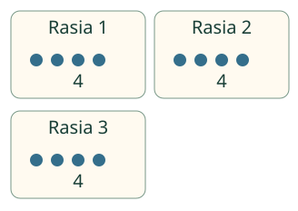
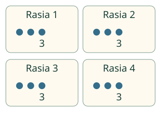

Aavan marjakori.
Jaa 12 marjaa tasan kolmeen rasiaan.
Ilman JavaScriptiä: jaa 12 merkkiä kolmelle. Kukin saa 4. Pakkaa sitten samat 12 kolmen ryhmiin: ryhmiä tulee 4. Alla on kuvat ja selitykset.
Aava jakaa marjoja tasan. Loikka pakkaa niitä rasioihin. Kertolasku auttaa kumpaakin.
Jakolaskun apuna kertolasku
Kun tiedät 3 × 4 = 12, tiedät myös 12 : 3 = 4. Mitä neljä tarkoittaa? Se riippuu jakokysymyksestä.
Kukin saa neljä

Jaetaan 12 marjaa tasan kolmeen rasiaan. 12 : 3 = 4 marjaa kussakin. Tarkistus: 3 rasiaa × 4 marjaa = 12 marjaa.
Rasioita tulee neljä

Pakataan 12 marjaa kolme kerrallaan. Nyt 12 : 3 = 4 rasiaa. Tarkistus: 4 rasiaa × 3 marjaa = 12 marjaa.
Mieti: onko vastaus aina jakaja?
Katso perustelu
Ei. Laskussa 20 : 5 kysytään, mikä luku kertaa 5 on 20. Se on 4. Viisi on jakaja, ei tämän laskun vastaus.
Kokeile uudessa tilanteessa: 20 matkustajaa, 4 joka veneeseen. Montako täyttä venettä? Valitse tehtävistä veneet ja tarkista.
Entä yksi ja nolla?
8 : 1 = 8: yhteen rasiaan tulee kaikki. 0 : 4 = 0: tyhjästä korista ei tule kenellekään marjoja. Nollalla jakamista tässä ei tehdä.
Jakaminen ei siis aina pienennä lukua. Käytä kertolaskutarkistusta sen sijaan.
Lopuksi: tiedät 5 × 6 = 30. Miten ratkaiset 30 : 5?
Opettajalle ja kokeilu pöydällä
Luokat 1–2. Vaaditut esitiedot: kertomisen ja jakamisen yhteys sekä alemmat kertotaulut. Jaa 12 irtomerkkiä kolmeen kuppiin, sitten kokoa kolmen ryhmiä. Pyydä osoittamaan, tarkoittaako vastaus ryhmien määrää vai yhden ryhmän sisältöä. Napautuksia, nimeämistä tai ääneen vastaamista ei vaadita ruututehtävässä.
Mallin vaihe on yksi jakokierros tai kolmen ryhmä; toiston tahti ei mittaa fyysistä aikaa. Kuvan pisteet ovat marjojen merkkejä. Malli ja vastaus ovat erilliset, ja vastata saa myös suoraan. Paikallinen numerovastaus ei todista tiettyä laskutapaa, fyysistä jakamista, muistamista eikä kaikkien jakofaktojen sujuvuutta. Ei oppilastallennusta tai aikarajaa. Palaa myöhemmin esimerkiksi laskuun 15 : 3 = 5.